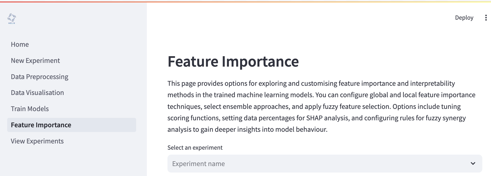
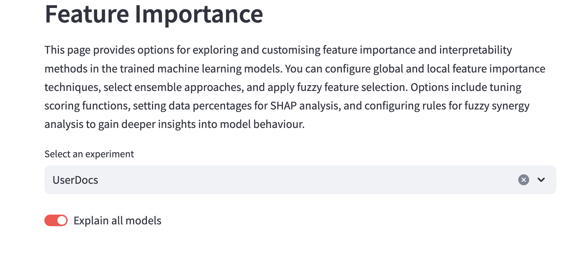
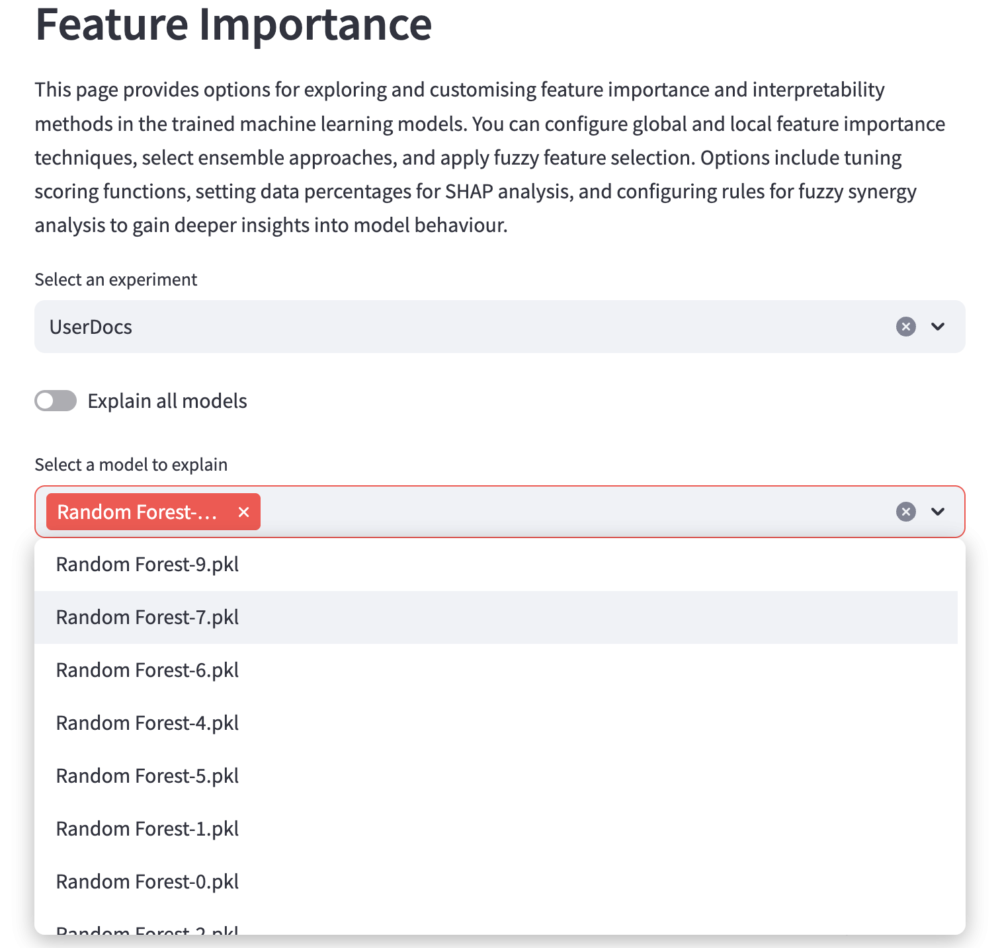
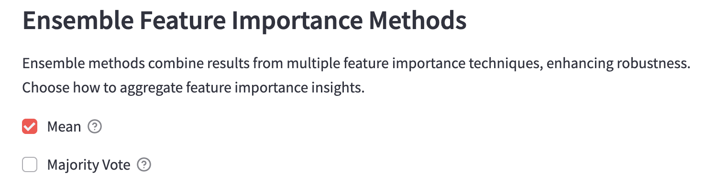
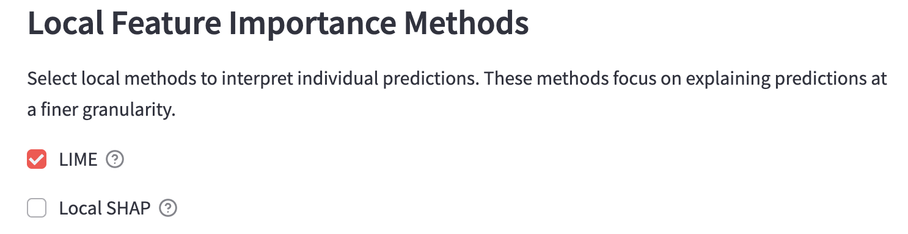
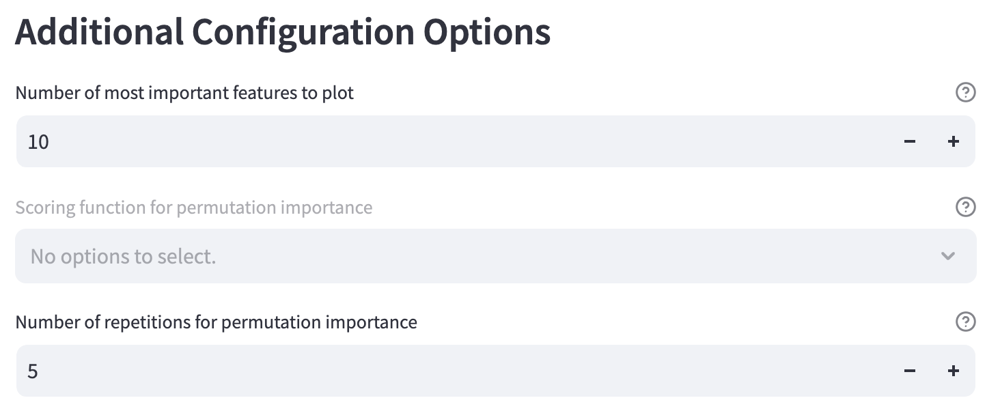
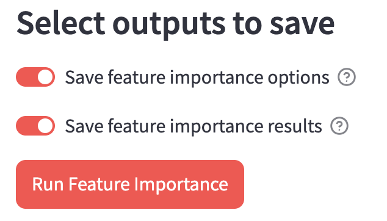

Feature importance¶
Once you have trained some models in your experiment, you can then perform feature importance analyses to assess which features more most influential in the models’ decision making. You can get to the Feature Importance page by clinking on Feature Importance on the left hand side of the page.

To begin explaining your models, you can click the “Explain all models” toggle and have all your models evaluated…

…or you can use the dropdown menu to select specific models to evaluate.

Global feature importance methods¶
These methods evaluate the influence of individual features overall on a model’s decisions. There are two methods available.

Ensemble feature importance methods¶
Ensemble methods combine results from multiple feature importance techniques, enhancing robustness. To use ensemble methods, you must configure at least one global importance method. There are two methods available.
Mean
Use the mean of importance estimates from the selected global methods.
Majority vote
Take the majority vote of importance estimates from the selected global methods.

Local feature importance methods¶
These methods are used to interpret feature importance on a per prediction basis. You can see which features had the most influence - and in which direction - on each prediction. There are two methods available.

Additional configuration options¶
Number of most important features to plot
Change how many top features will be plotted.
Scoring function for permutative importance
Number of repetitions for permutation importance
The number of times to permute the features using permutative importance.

Select outputs to save¶
Save feature importance options
Save feature importance results

Run the analysis¶
Press the “Run Feature Importance” button to run your analysis. Be patient as this can take a little more time than the model training.